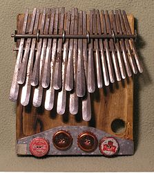

The mbira is an African musical instrument consisting of a wooden board
(often fitted with a resonator) with attached staggered metal tines, played by
holding the instrument in the hands and plucking the tines with the thumbs. The
mbira is usually classified as part of the lamellaphone family, and part of the
idiophone family of musical instruments.
Members of this broad family of instruments are known by a wide variety of
names. In the Anglo world it is often called a thumb piano. Indigenous African
names include likembe, mbila, mbira huru, mbira njari, mbira nyunga nyunga,
nhare, matepeand njari, sansu, zanzu, karimbao, marimba, karimba, kalimba,
okeme, ubo, or—between the late 1960s and early 1970s—sanza, as well as
marímbula (also kalimba) in the Caribbean Islands.
Both Joseph H. Howard, owner of the largest collection of drums and ancillary
folk instruments in the Americas, and Nigerian drummer Babatunde Olatunji argue
that the mbira is thoroughly African, being found only in areas populated by
Africans or their descendants.
In Eastern and Southern Africa, there are many
kinds of mbira, usually accompanied by the hosho. It was reported to be used in
Okpuje, Nsukka area of the south eastern part of Nigeria in the early 1900s. It
is a particularly common musical instrument of the Democratic Republic of Congo
and the Shona people of Zimbabwe. It is also often an important instrument to be
played at religious ceremonies, weddings, and other social gatherings.

Mbira came to prominence after the worldwide stage performance and recordings of
Thomas Mapfumo, whose music is based on and includes the mbira; the work of
Dumisani Maraire, who brought marimba and karimba music to the American Pacific
Northwest; Ephat Mujuru, who was one of the pioneer teachers of mbira in the US;
as well as the writings and recordings of Zimbabwean musicians made by Paul
Berliner. Commercially produced mbiras were exported from South Africa by
ethnomusicologist Hugh Tracey from the 1950s onward, popularizing the instrument
outside of Africa.
Various kinds of plucked idophones and lamellaphones have existed in Africa for
thousands of years. The tines were originally made of bamboo but over the years
metal keys have been developed.
The mbira appears to have been invented twice in
Africa: a wood or bamboo-tined instrument appeared on the west coast of Africa
about 3000 years ago, and metal-tined lamellophones appeared in the Zambezi
River valley around 1,300 years ago.These metal-tined instruments traveled all
across the continent and differentiated in their physical form and social uses
as they spread.
Kalimba-like instruments came to exist from the northern reaches
of North Africa to the southern extent of the Kalahari Desert, and from the east
coast to the west coast, though many or most groups of people in Africa did not
possess mbiras. There were thousands of different tunings, different note
layouts, and different instrument designs, but there is a hypothetical tuning
and note layout of the original metal-tined instrument from 1,300 years ago.
In the mid 1950s the mbira was the basis for the development of the kalimba, a
westernized version designed and marketed by the ethnomusicologist Hugh Tracey,
leading to a great expansion of its distribution outside of Africa.
Acoustics:
Lamellophones are instruments which have little tines, or "lamellae", which are
played by plucking. Unlike stringed instruments or air-column instruments like
flutes, the overtones of a plucked lamella are inharmonic, giving the mbira a
characteristic sound. The inharmonic overtones are strongest in the attack and
die out rather quickly, leaving an almost pure tone.
The note arrangement of most mbira, with the notes in the scale ascending on the
tines from the center outward in an alternating right-left fashion, results in
chords being made by adjacent tines. When any tine is plucked, the adjacent
tines also vibrate, and these harmonizing secondary vibrations serve a similar
role to the harmonic overtones of a string instrument - they increase the
harmonic complexity of an individual note.
Rhythm:
Mbira music, like much of the sub-Saharan African music traditions is based on
cross-rhythm. The following example is from the kushaura part of the traditional
mbira piece "Nhema Musasa."
The left hand plays the ostinato "bass line," while
the right hand plays the upper melody. The composite melody is an embellishment
of the 3:2 cross-rhythm